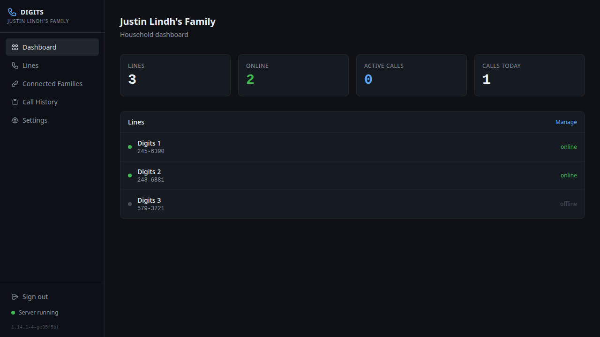

One-page spike of the webapp redesign: same Go handler data, new stylesheet + layout + dashboard template. Direction C aesthetic but app-grade density, not marketing tone.
Before (current prod)
GitHub-panel dark mode.

Current · desktop
After — spike
Warm paper / walnut / brass spice. Fraunces on display only. JetBrains Mono on phone numbers. No sidebar; top rail with brass underline on active nav.
Spike · desktop (1280)
Spike · mobile (375)
Marketing-moves removed (vs. the original C mockup)
No sentence-led hero copy ("Two are answering. One is quiet." → just the household name)
No phone silhouettes on line rows (saved for line detail hero only)
No italic serif deck copy; Fraunces reserved for wordmark + page title
Compressed vertical rhythm: 44px line rows (mockup was ~64px), tighter panel padding
Stats as a 4-cell strip, not four hero KPI tiles
Muted state coloring when a stat is zero; brass-accented only when data is live
Signatures kept from direction C
Warm paper palette (#f5f1ea / walnut #2a1f18) with brass #c48b3a as rare spice
Fraunces variable serif for the Digits wordmark and page title
JetBrains Mono for phone numbers, tabular-nums for alignment
Forest-green dot + subtle halo for online state (no saturated web-green pill)
Top rail instead of sidebar; brass underline marks the active nav item
Soft warm shadows on cards; 12px radius; 1px hairline rules